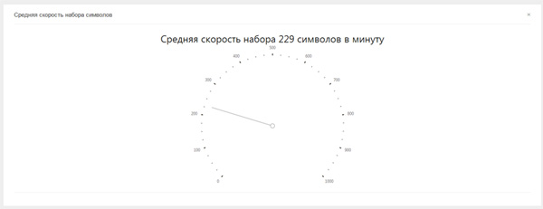
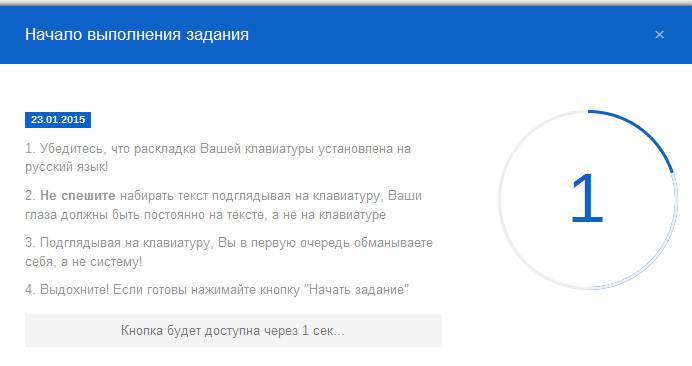
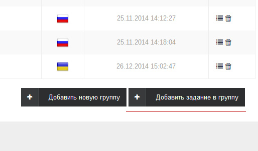

FAQ
Ознакомьтесь, пожалуйста, с инструкцией
Описание проекта
Проект абсолютно бесплатный клавиатурный тренажер, Вам не нужно идти на курсы компьютерного набора или тем более добираться на них, каждый день, тратя на это свое время и деньги. Есть возможность освоить слепой метод набора в любом удобной для Вас месте, где есть доступ к сети Интернет. Все, что Вам нужно это зарегистрироваться на сайте и начать выполнять задания, с помощью которых Вы освоите десятипальцевый слепой метод печати. Вы сможете быстро набирать текст на клавиатуре, освоив данный метод.

При работе за компьютером человек практически постоянно набирает текст, под работой подразумевается подготовка документов, бизнес-планов, отчетов, подготовка учебных материалов, рефератов, докладов, курсовых, дипломов, прочего, а не играя и смотря фильмы. При этом он набирает текст, делая это неправильно! Если не правильно держать руки на клавиатуры, то они начинают болеть, а из-за низкой скорости печати, при больших объемах текста, появляется усталость и самое главное – Вы тратите самое ценное в жизни – время.
Стоит отметить, что Вы сможете освоить, набор символов, как русского, так и английского языка. При разработке списка заданий проведен анализ частоты букв и лемм в русском и английском языке и учли полученные результаты. Так учтен тот факт, что некоторые пользователи могут посчитать, что задания неэффективные, хотя это не так, но все же существует «Конструктор заданий» с помощью которого Вы сами сможете создать для себя задания и выполнять их. Вам стоит ознакомиться с рекомендациями по использованию перед тем, как начать обучение.
Метод слепого набора символов или слепой десятипальцевый метод набора.
Слепой метод набора десятью пальцами являться одним из самых эффективных и быстрых способов печати символов на клавиатуре или печатной машинке, некоторые называют его метод «ФЫВА ОЛДЖ». Соблюдая простые правила набора - Вы сможете быстро освоить данный метод и в последствии более быстро нажимать клавиши клавиатуры. Суть слепого метода печати заключается в том, что при наборе символов из текста, перенаборе его с экрана монитора или другого источника, нельзя смотреть на клавиатуру, глаза должны быть только на тексте. Это первое правило данного метода печати. При этом каждый палец руки отвечает за конкретные буквы на клавиатуре. Это второе важно правило – каждый палец нажимает только на определенные клавиши. Клавиатура сделана так, что за каждым пальцем закреплены определенные группы клавиш, которые он, при правильном положении рук, сможет без особого труда нажимать. Ниже на картинке показано, каким пальцами принадлежат клавиши на клавиатуре.
Почти на каждой клавиатуре на клавишах «А» и «О» есть специальные каёмки – это исходные позиции указательный пальцев ваших рук. Исходная позиция среднего пальца левой руки - клавиша с буквой «В», правой – «Л». Безымянный палец левой руки в исходной позиции лежит на клавише с буквой «Ы», правой на «Д». Мизинцы лежат на клавишах «Ф» для левой руки и на «Ж» для правой руки. Старайтесь после нажатия возвращать пальцы на исходные позиции и не в коем случае не подсматривайте на клавиатуру иначе Вы, потом всегда будете на нее подсматривать. Выполняя эти правила - Вы уже совсем скоро будете набирать текст на клавиатуре гораздо быстрее.
Статистика пользователя.
Пользователям предлагается постоянно следить за своим обучением в разделе «Статистика». Вам представлена общая информация о состоянии системы и результаты выполнения заданий. В верхней части показаны данные об общем количестве заданий, количестве зарегистрированных пользователей, а так же количестве групп заданий. Далее представлена информация об общем количестве выполненных заданий, а так же общий прогресс выполнения. Так же Вы можете ознакомиться с количеством успешно завершенных заданий и количеством заданий, которые Вы не смогли пройти и провалили. Ниже указана Ваша средняя скорость набора символов в тех заданиях, которые Вы завершили успешно.

Вы сможете так же просматривать статистику конкретного задания, нажав на соответствующую кнопку в списке заданий, возле кнопки «Начать выполнение».
Выполнение заданий в системе.
Для того чтобы начать выполнение задания нужно нажать на кнопку выполнения, которая есть возле каждого задания. Данной кнопки может не быть, если задание пока недоступно. Для этого нужно пройти сначала предыдущее, чтобы его открыть.
На странице выполнения Вы увидите текст задания в верхней части экрана в полной форме, а так же строку с заданием. Вы можете набирать текст как с текста так и смотря на строку. Помните, что Вы не должны опускать глаза на клавиатуру, держите их постоянно на тексте, в этом суть десятипальцевого метода печати на клавиатуре. Справа Вы можете наблюдать за текущим символом, если Вы вдруг сбились, а так же за временем выполнения задания и количество допущенных ошибок.
При старте выполнения задания Вы увидите информационное окно, в котором Вам напомнят проверить раскладку Вашей клавиатуры, что бы Вы не допустили ошибки уже при старте задания, а так данное окно дает 5 секунд чтобы приготовиться к выполнению.

При успешном или неуспешном выполнении Вы увидите информационные окна с результатами выполнения.
Конструктор заданий.
При разработке проекта, был учтен факт, что, пользователи могут посчитать задание малоэффективными, хотя это не так, но все же. Поэтому существует «Конструктор заданий», где каждый пользователь может создать свой набор заданий и выполнять их отдельно, таким же способом, как было описано в пункте 4.
Группы заданий
При создании собственных заданий их можно объединять в группы для более удобного поиска. Каждая группа может содержать не более 15 заданий. Группы можно создавать под конкретные языки: русский, украинский, английский. Далее в списке групп это будет отображено с помощью специальных пиктограмм.
Добавление новой группы
Для того чтобы создать новую группу заданий перейдите на страницу списка заданий и нажмите на соответствующую кнопку внизу страницы.
На открывшейся странице, заполните необходимы данные: название группы, язык на котором будут задания в создаваемой группе. Нажмите, кнопку «Добавить новую группу». При успешном добавлении группы Вы увидите сообщение об этом на странице списка групп.
Добавления заданий в группу
Каждая группа может содержать до 15 заданий. Для того чтобы добавить новое задание в созданную Вами группы, нажмите на кнопку «Добавить задание в группу» на странице списка групп или выберите соответствующий пункт слева в меню.

На открывшейся странице заполните все поля формы, а именно название формы, выберите группу в которую Вы добавляете задание и собственно тес задания. После добавления нового задание оно сразу станет доступно для выполнения.
Выполнение Ваших заданий
В меню «Конструктор заданий» выберите меню со списком заданий соответствующего языка, где Вы создавали группы.
На открывшейся странице выберите ваше задание и нажмите кнопку «Выполнение». Стоит отметить, что в группах «конструктора заданий», не нужное «открывать» задания выполнив предыдущее, они сразу доступны для выполнения в отличии от основного списка заданий, но помните, что все всем должна быть последовательность и нужно начинать с простых заданий и плавно переходить в сложным.
Отправка сообщений
Модуль отправки сообщений, исключительно для отправки Вам важных сообщений об изменениях, а так же сообщений о Ваших действиях, а не для связи с другими участниками. В меню есть возможность просмотреть список сообщений от администрации, который так же выведен в верхней части странице. В меню системных сообщений Вы сможете видеть сообщения о Ваших действиях, например о статусах редактирования Ваших персональных данных, успешном выполнении заданий и т.д. С помощью данного модуля Вы сможете сообщить, на соответствующих страницах, о найденных или замеченных Вами ошибках на сайте, а так же сделать свое предложение по улучшению. 7. На странице рейтинга пользованы, отображены пятнадцать аккаунтов самых успешных, по скорости набора текста, пользователей нашей системы. Выполняйте задания, трудитесь и Вы тоже попадете в этот рейтинг.
Рейтинг пользователей
На странице рейтинга пользованы, отображены пятнадцать аккаунтов самых успешных, по скорости набора текста. Выполняйте задания, трудитесь и Вы тоже попадете в этот рейтинг.
Редактирование профиля
Стоит сразу сказать, что Ваши данные не где использоваться не будут, только для связи с Вами.